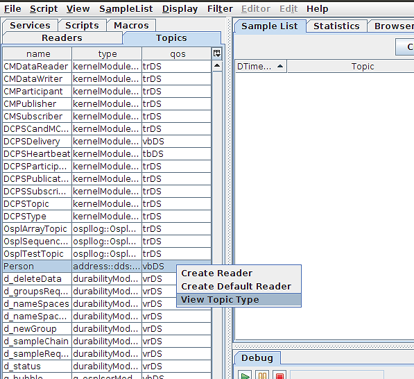

8. Google Protocol Buffers¶
This section describes Tester features for Google Protocol Buffers.
8.1. About Google Protocol Buffers in Tester¶
In versions of Vortex OpenSplice that support Google Protocol Buffers, Tester is able to read from protocol buffer topics and display its samples as regular field name and value pairs, just as if it were from a regular IDL-defined topic.
The Tester feature for Google Protocol Buffer topic reading is enabled only on Vortex OpenSplice middleware installs where Google Protocol Buffer support is included. For installations where it is not included, the feature is disabled in Tester.
8.2. Viewing type evolutions¶
The main feature of using Google Protocol Buffers as the type definition for a topic is the ability to change, or ‘evolve’, a topic’s type. Tester can become aware of changes to a protocol buffer topic’s type, and can display the topic type definition for each type evolution that is registered.
To view the type evolutions for a protocol buffer topic, right-click the topic in the Topics tab, and select View Topic Type from the pop-up menu.
View Topic Type from the Topics list
{kind=link}
8.2.1. View Topic Type Window¶
Upon selection of the menu item, the View Topic Type window will appear for the selected topic. By default, it shows the type name for the topic and the DDS type definition. If the topic is a protocol buffer topic, it will display additional information:
- The Evolutions for the type are displayed in a drop-down combo box. It lists the known evolutions for the type according to the time it was registered in the DDS system. The most recent evolution is at the top of the list and is selected by default.
- The Type Hash is an non-editable text field that displays the 128-bit hash that uniquely identifies the selected type evolution for the topic type. The field is highlightable for easy copy/pasting.
- The Proto Typedef tab is added when viewing protocol buffer topic types. It displays a description for all fields and nested types defined in the protocol buffer message for the currently-selected evolution, in a text format emulating the original .proto file format. Message type fields found in the typedef that are not defined as nested messages inside the main DDS message type are defined under a separate section, External Definitions. These messages have their fully- qualified type name to indicate where they were defined. Please note that this typedef reconstruction is only meant to give the user an idea as to what type of data is found in the topic type. It is not guaranteed to be a 100% reconstruction of the original .proto file as it was written, or to be compilable by the protoc compiler.
- The DDS Typedef tab contains the same kind of type decription as it would for a normal topic, but for protocol buffer topics, it describes the field names and field types for the currently-selected type evolution as it is understood by Tester for sample editing.
View Topic Type window for a protocol buffer topic
{kind=link}
Proto Typedef with external definitions
{kind=link}
8.3. Reading protocol buffer topics¶
Tester reads protocol buffer data by reading in the byte sequence data contained in the user data, and then replacing all fields with regular field name and value pairs just as if it were data from a regular topic. The process for creating readers for protocol buffer topics is almost identical to the process described in Section 3.3.3, To Add a Reader from the Topic list, on page 24.
- When creating a reader for a protocol buffer topic via the Create Default Reader right-click menu option on the Topic list, all default settings will be used as before, but with the addition that all incoming samples will be decoded as the most recently-registered type evolution.
- When creating a reader for a protocol buffer topic via the Create Reader right-click menu option on the Topic list, or via the File > Add Reader main menu option, the Add Reader dialog will be presented, as normal. However, it is presented with an extra field to choose the desired type evolution to use to view user data.
Add Reader dialog with type evolution chooser
{kind=link}
8.4. Reading protocol buffer topics via script¶
It is possible to declare which type evolution to read protocol buffer topics as, via the Reader script command (defined in Section 5.2.15, Reader, on page 83). The topicname parameter for the reader command can be modified with a type evolution’s type hash to specify which type evolution view protocol buffer user data as. The type hash can be viewed and copied from the View Topic Type window (see Section 7.2.1 on page 96).
To create a default reader with the most recently-registered type evolution, the command is:
reader(Person);
To create a reader with a specific type evolution, the command is the same, but with the type hash pasted in after the topic name, separated by a ‘#’:
reader(Person#73979410269545042249851605221960719319);
8.5. Editing protocol buffer topic samples¶
Editing samples from protocol buffer topics is the same as samples from a regular topic. Protobuf fields can be declared as optional or required, so to reflect that in the Sample Edit window (see Section 3.4.1.1, To Write Sample Topic data, on page 28), a Cyan color highlight is added to required protocol buffer fields. In all other senses, though, editing samples in either the Sample Edit window or in scripting is precisely the same as it is for normal topics.
The Sample Edit Window for a protocol buffer sample
{kind=link}